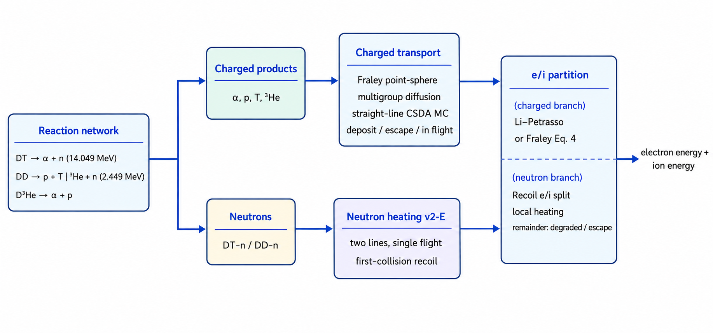

Nuclear burn reference
TENRYU's 1D spherical burn kernel advances Bosch–Hale DT, DD, and D³He reactions, fuel depletion, charged-product deposition or transport, and electron/ion energy partition as one explicit source stage. Version 2 adds screening, multigroup diffusion, Monte Carlo alpha transport, and two-line first-collision neutron heating.
The physical mechanism
The burn stage converts fusion rest mass into fast charged products and neutrons. In a two-temperature Lagrangian calculation, the kernel advances channel rates \(n_i n_j\langle\sigma v\rangle/(1+\delta_{ij})\) with Bosch–Hale reactivities, depletes the fuel, and returns the released energy as electron- and ion-heating sources. Inventories are specific abundances \(Y_s=n_s/\rho\), which are Lagrangian invariants: compression changes \(n_s\) through \(\rho\) alone, so hydrodynamics cannot create or destroy particles. This removes the failure in which a frozen birth density overburns an expanding cell.
Charged-product transport matters because a 3.5-MeV alpha has a range measured in areal density; whether that energy remains in the hot spot or escapes controls self-heating and ignition margin. TENRYU provides a deliberate model ladder: the Fraley point-sphere model gives a cheap analytic locally retained fraction in spherical geometry, multigroup diffusion slows six product slots — one per charged product and channel: the DT alpha, the DD proton, triton, and helion, and the D³He proton and alpha — on a Corman energy grid without statistical noise, and Monte Carlo CSDA persists straight-line particles between steps as the statistical reference. All three report through the same energy ledgers.
A fast ion initially loses energy mainly to plasma electrons; once it slows below the critical energy — the energy at which losses to electrons and to ions are exactly equal — ion losses take over. That partition matters because ion heating promotes further burn, whereas electron heating can leak through conduction and radiation. The default Li–Petrasso stopping split is tabulated at initialization over \(T_e,T_i,n_e\), leaving interpolation only at runtime. The simpler Fraley law \(f_i=1/(1+32/T_e[\mathrm{keV}])\) is retained only for DT alphas.
The v2-E neutron model is single-flight, first-collision recoil heating on fuel D and T, with discrete 14.049- and 2.449-MeV lines. The first collision deposits the mean recoil locally and partitions it with the same Li–Petrasso table. Subsequent flights, kerma (the kinetic energy released in matter per unit mass by neutron interactions), (n,2n) breakup, time of flight, and spectrum width are omitted explicitly, so the resulting profile is a fuel-self-heating approximation rather than a neutronics answer. Salpeter two-temperature and Chugunov–DeWitt screening modify low-temperature reactivities; the two-temperature Salpeter form is a TENRYU extension. Fusion energy is an external rest-mass source audited separately as deposited, escaped, or in-flight energy.
Reactivities and fuel inventory
The available channels are DT = T(d,n)⁴He, both DD branches D(d,p)T and D(d,n)³He, and D³He = ³He(d,p)⁴He. Reactivities use the Bosch–Hale (1992) Padé fits. Cell ion temperature is converted from eV to keV exactly once at the kernel boundary. The volume rate is \(r=n_i n_j\langle\sigma v\rangle/(1+\delta_{ij})\), giving the required factor 1/2 for DD. Rates are zero below each fit floor and clamped at the high-temperature ceiling. The default T_floor_keV=0.2 matches the DT/DD floor; the D³He fit begins at 0.5 keV.
fuel_materials names the non-void materials that receive inventories. x_D, x_T, and x_He3 set their initial mole fractions; all must be non-negative and sum to one. D, T, ³He, ⁴He, and proton inventories are stored as \(Y_s=n_s/\rho\), with \(n_s=\rho Y_s\) reconstructed for each rate evaluation. This is the Lagrangian invariant and avoids the severe overburn caused by freezing birth number density in an expanding cell.
screening="none" is the identity and preserves v1 behavior. salpeter applies weak screening with an electron-inclusive, two-temperature Debye length; chugunov_dewitt uses the Chugunov–DeWitt 2009 interpolation formula (their Eq. (A4)) [3] with a rigid electron background. The two-temperature Salpeter form is a TENRYU extension. Invalid thermodynamic inputs fall back to unity, and its exponent is capped at \(h=2\) outside the weak-screening regime.
- \(r=n_i n_j\langle\sigma v\rangle/(1+\delta_{ij})\) — the channel reaction rate per volume; \(\delta_{ij}=1\) supplies the DD half factor for identical reactants.
- \(Y_s=n_s/\rho\) — the Lagrangian specific abundance. Hydrodynamic compression or expansion changes \(n_s=\rho Y_s\), not \(Y_s\) itself.
- Temperature boundary — ion temperature is converted from TENRYU's internal eV to keV exactly once before evaluating the Bosch–Hale fit.
- Fit bounds — rates vanish below the inclusive floors (0.2 keV for DT/DD and 0.5 keV for D³He) and clamp above the Bosch–Hale fit-validity ceilings [1]: 100 keV for DT and both DD branches, 190 keV for D³He;
T_floor_keVdefaults to 0.2. - Screening — the selected factor multiplies each reaction pair's reactivity; Salpeter invalid inputs revert to one, and its weak-model exponent \(h\) (the screening enhancement is \(e^h\)) is capped at \(h\le2\) outside the weak-screening regime.
- Fraley retention — the point-sphere kernel determines the locally retained fraction from the fuel-sphere column and the product's birth radius.
- \(f_i=1/(1+32/T_e[\mathrm{keV}])\) — the optional Fraley electron/ion split, restricted by validation to DT alphas.
Depletion and explicit time control
Each burn stage freezes density and temperature and advances the per-cell species ODE with explicit-midpoint RK2 subcycles. The requested count is based on the larger of gross production and gross destruction for every reactant in an enabled channel, keeping relative inventory change per substep below eps_deplete. Gross control resolves cases where DD breeds trace T while DT consumes it almost as quickly, even though the net T rate is small. A deterministic scale-back of reaction counts preserves positivity and stoichiometric ledgers.
If the requested count exceeds subcycle_max, the current step uses the cap, reports saturation, and folds \(0.9\,dt\,M_{max}/M_{req}\) into the next burn time-step limit (\(M_{req}\) is the requested subcycle count and \(M_{max}\) the subcycle_max cap). Deposited power also imposes \(\Delta t\le f_E e_{cell}/P_{dep}\), where \(f_E=\)explicit_source_limit and \(e_{cell}=\rho_cV_c(e_e+e_i)\) is the cell's total internal energy — the same limiter construction as the hot-electron kernel's identically named key, with the electron-plus-ion reservoir here. This bounds self-heating while stage temperatures remain frozen.
One burn stage, step by step
- Freeze each cell's density and electron/ion temperatures for the duration of the burn stage.
- Compute the enabled channel rates and the required RK2 subcycle count from gross production and gross destruction for every reactant, targeting a relative inventory change below
eps_depleteper substep. Gross rather than net control resolves the trace-tritium DD-to-DT turnover case. - Advance the five-species network with explicit-midpoint RK2. If a proposed reaction count would exhaust a reactant, deterministically scale the counts back before reconstructing inventories, preserving positivity and the stoichiometric ledgers.
- If the required count saturates
subcycle_max, report it and fold \(0.9\,dt\,M_{max}/M_{req}\) into the next burn time-step limit. Independently impose \(\Delta t\le f_E e_{cell}/P_{dep}\) on deposited source power. - Hand charged products to the selected
fraley,diffusion, ormctreatment, and send neutron products through the optional first-collision heating path. - Partition deposited energy into electron and ion sources, update the deposited, escaped, and in-flight ledgers, and expose the combined burn time-step limiter to the driver.
Product transport and electron/ion partition
The default scheme="fraley" combines the Fraley alpha-range fit with a point-source spherical kernel. It computes the locally retained fraction from fuel-sphere column and birth radius, deposits that fraction in the birth cell, and sends the remainder to the charged-escape ledger. scheme="diffusion" follows six product slots on a Corman-1975 multigroup energy grid and deposits energy lost during group-to-group slowing. scheme="mc" persists straight-line CSDA particles between steps and samples mc_particles_per_cell particles per slot, cell, and step. MC tallies are statistical, but the counter-based Philox RNG streams (Philox4x32-10) remain independent through particle global IDs. local transports no product energy and deposits it entirely in the birth cell (the electron/ion partition is shared with the other schemes).
The default local-deposition split, partition="li_petrasso", tabulates Li–Petrasso stopping over \(T_e,T_i,n_e\) during initialization; runtime performs only interpolation. The alternative Fraley law, \(f_i=1/(1+32/T_e[\mathrm{keV}])\), is restricted to DT alphas and is rejected with DD or D³He. Multigroup diffusion has an intrinsic energy-integrated stopping partition and does not use this key.

Neutron heating v2-E
With neutron_heating=True, DT-n at 14.049 MeV and DD-n at 2.449 MeV are emitted isotropically. A neutron_heating_n_mu-point Gauss–Legendre quadrature traces shell chords. Attenuation uses elastic scattering on fuel D and T only. The first collision deposits the mean recoil energy locally, and the Li–Petrasso table partitions the recoil D/T energy between electrons and ions. Residual scattered-neutron energy is recorded as degraded; energy crossing the outer boundary is escaped.
This tier-1 model is single-flight. It omits subsequent flights of degraded neutrons, shell-material kerma, (n,2n) breakup, time-of-flight retardation, and recoil-spectrum width. Its spatial heating profile should therefore be read as a first-collision fuel-self-heating approximation.
Namelist controls
These are the principal keys in the top-level Burn block. See the namelist reference for complete validation rules.
| Key | Default | Purpose |
|---|---|---|
enabled | False | Master switch; 1D requires spherical geometry, and 2D RZ accepts scheme="local"/"diffusion" only. |
fuels | ["DT","DD"] | Selects channels from DT, DD, and D3He. |
scheme | "fraley" | Charged-product treatment: fraley, diffusion, or mc in 1D; local or diffusion in 2D RZ. |
screening | "none" | none, salpeter, or chugunov_dewitt. |
fuel_materials | ["DT"] | Material names carrying the initial fuel inventory. |
x_D / x_T / x_He3 | 0.5 / 0.5 / 0.0 | Initial mole fractions; non-negative and summing to one. |
T_floor_keV | 0.2 | Reactivity temperature floor [keV]. |
partition | "li_petrasso" | Local-deposition e/i split; fraley is DT-alpha-only. |
eps_deplete / subcycle_max | 0.1 / 64 | Substep inventory-change target and count cap. |
explicit_source_limit | 0.2 | Explicit time-step fraction for deposited energy. |
diffusion_groups / diffusion_E_min_keV | 30 / 20.0 | Charged-particle group count and the bottom edge of the group grid: a product slowed below it deposits its remaining energy locally. The default 20 keV sits far below the MeV birth energies yet far above \(T_i\), where the residual range is negligible. |
mc_particles_per_cell | 16 | MC samples per slot, cell, and step. |
neutron_heating | False | Enables two-line first-collision neutron heating. |
neutron_heating_n_mu | 16 | Even-order μ quadrature for isotropic-emission chords. |
Verification
- G-R0 pins eight Bosch–Hale temperatures across four reactions to relative \(1.5\times10^{-3}\), catching eV/keV errors. G-R1 covers closed-form DT/DD depletion, coupled bred-species chains, gross-turnover subcycling, and reaction-count stoichiometry.
- G-K0/K1/K2 cover the Fraley range, point kernel, and sphere-average identity; G-P1/P2 cover the published Li–Petrasso stopping-power reference values (their Table I [5]) and the intentionally different Fraley partition. The six-run rung-2 microsphere gate combines the fuel-pair bound, rate scaling, and early alpha-recapture self-heating.
- Disabled-versus-baseline A/B twins matched 53/53 field and 164/164 history datasets bitwise, with GXII golden rel=0 in six runs. G-L1 and v2 transport gates require released = deposited + escaped + Δin-flight within floating-point closure.
- v2-E gates frozen constants, the thin limit, analytic spherical attenuation, and emitted = deposited + degraded + escaped. MC separately gates fixed-seed CV ≤0.1% (CV: coefficient of variation, \(\sigma/|\mu|\)), cross-seed CV ≤5%, and Philox stream independence.
References
- H. S. Bosch and G. M. Hale, "Improved Formulas for Fusion Cross-Sections and Thermal Reactivities," Nucl. Fusion 32, 611–631 (1992). doi:10.1088/0029-5515/32/4/I07
- E. E. Salpeter, "Electron Screening and Thermonuclear Reactions," Aust. J. Phys. 7, 373–388 (1954). doi:10.1071/PH540373
- A. I. Chugunov and H. E. DeWitt, "Nuclear Fusion Reaction Rates for Strongly Coupled Ionic Mixtures," Phys. Rev. C 80, 014611 (2009). doi:10.1103/PhysRevC.80.014611
- G. S. Fraley, E. J. Linnebur, R. J. Mason, and R. L. Morse, "Thermonuclear Burn Characteristics of Compressed Deuterium-Tritium Microspheres," Phys. Fluids 17, 474–489 (1974). doi:10.1063/1.1694739
- C.-K. Li and R. D. Petrasso, "Charged-Particle Stopping Powers in Inertial Confinement Fusion Plasmas," Phys. Rev. Lett. 70, 3059–3062 (1993). doi:10.1103/PhysRevLett.70.3059
- E. G. Corman, W. E. Loewe, G. W. Cooper, and A. M. Winslow, "Multi-Group Diffusion of Energetic Charged Particles," Nucl. Fusion 15, 377–386 (1975). doi:10.1088/0029-5515/15/3/003
- H. Brysk, "Fusion Neutron Energies and Spectra," Plasma Phys. 15, 611–617 (1973). doi:10.1088/0032-1028/15/7/001
- J. Yuan, G. A. Moses, and P. W. McKenty, "Monte Carlo Charged-Particle Tracking and Energy Deposition on a Lagrangian Mesh," Phys. Rev. E 72, 046706 (2005). doi:10.1103/PhysRevE.72.046706